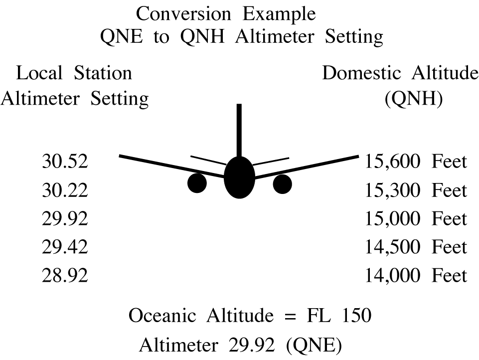
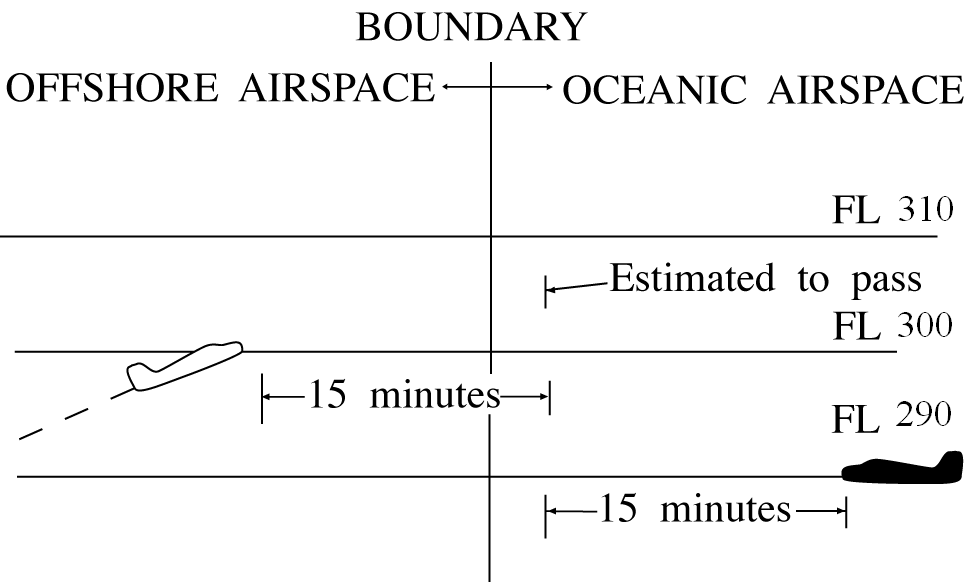
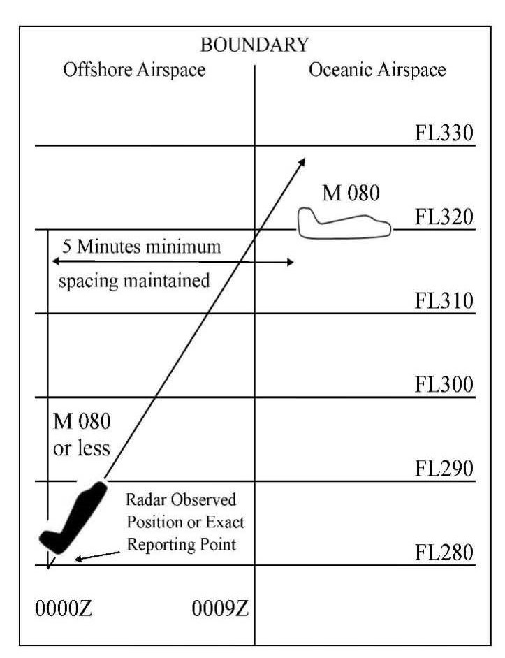

Chapter 8. Offshore/Oceanic Procedures
Section 5. Offshore/Oceanic Transition Procedures
8-5-1. ALTITUDE/FLIGHT LEVEL TRANSITION
When vertical separation is applied between aircraft crossing the offshore/oceanic airspace boundary below FL 180, control action must be taken to ensure that differences between the standard altimeter setting (QNE) and local altimeter setting (QNH) do not compromise separation. (See FIG 8-5-1.)

8-5-2. COURSE DIVERGENCE
When aircraft are entering oceanic airspace, separation will exist in oceanic airspace when:
- Aircraft are established on courses that diverge by at least 15 degrees until oceanic lateral separation is established, and
- The aircraft are horizontally radar separated and separation is increasing at the edge of known radar coverage.
8-5-3. OPPOSITE DIRECTION
When transitioning from an offshore airspace area to oceanic airspace, an aircraft may climb through opposite direction oceanic traffic provided vertical separation above that traffic is established:
- Before the outbound crosses the offshore/oceanic boundary; and
- 15 minutes before the aircraft are estimated to pass. (See FIG 8-5-2.)
FIG 8-5-2Transitioning From Offshore to Oceanic Airspace Opposite Direction 
8-5-4. SAME DIRECTION
When transitioning from an offshore airspace area to oceanic airspace or while within oceanic airspace, apply 5 minutes minimum separation when a following aircraft on the same course is climbing through the altitude of the preceding aircraft if the following conditions are met:
- The preceding aircraft is level at the assigned altitude and is maintaining a speed equal to or greater than the following aircraft; and
- The minimum of 5 minutes is maintained between the preceding and following aircraft; and
- The following aircraft is separated by not more than 4,000 feet from the preceding aircraft when the climb clearance is issued; and
- The following aircraft commences climb within 10 minutes after passing:
- An exact reporting point (DME fix or intersection formed from NAVAIDs) which the preceding aircraft has reported; or
- A radar observed position over which the preceding aircraft has been observed; and
- The following aircraft is in direct communication with air traffic control until vertical separation is established. (See FIG 8-5-3.)
FIG 8-5-3Transitioning From Offshore to Oceanic Airspace Same Direction 
8-5-5. RADAR IDENTIFICATION APPLICATION
Radar separation standards may be applied between radar identified aircraft and another aircraft not yet identified that is in transit from oceanic airspace or nonradar offshore airspace into an area of known radar coverage where radar separation is applied provided:
- Direct radio communications is maintained with one of the aircraft involved and there is an ability to communicate with the other;
- The transiting aircraft is RNAV equipped;
- The performance of the radar/system is adequate;
- Flight data on the aircraft that has not been radar identified indicate that it is equipped with a standard transponder and there is no known information that the transponder is not operating;
- Radar separation standards are maintained between the radar identified aircraft and any other observed targets until the transitioning aircraft is radar identified or nonradar separation is established;
- The facility has identified areas of known radar coverage, incorporated those areas into facility standard operating procedures (SOP), and provided training to the controllers.
- This procedure is also applicable to aircraft in transit from oceanic airspace into Guam Control Area (CTA), San Juan CTA and Honolulu CTA radar coverage areas.
- EXCEPTION: This procedure is not authorized if there is insufficient time for the controller to establish other approved separation in the event of a delay or inability to establish radar identification of the transiting aircraft taking into consideration factors such as aircraft performance characteristics, type, and speed; weather, traffic conditions; workload; frequency congestion; etc.